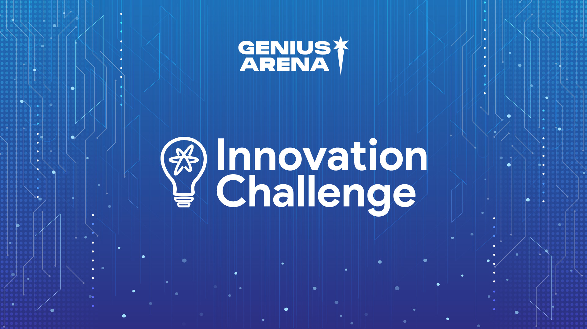
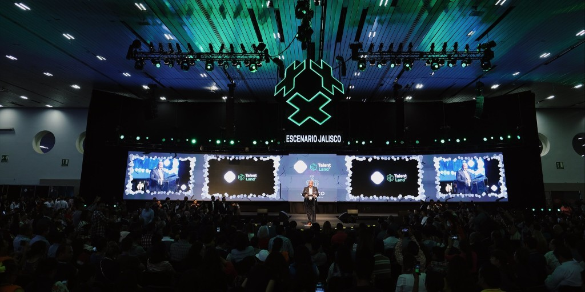

Talend Land Hackathon 2024
Ganador del Hackathon de Talend Land 2024 en la categoría de desarrollo económico. Mi equipo y yo desarrollamos una innovadora aplicación diseñada específicamente para microempresarios, con el objetivo de proporcionarles información útil y accesible para evaluar la salud de sus negocios.
La aplicación ofrece una variedad de funciones que permiten a los usuarios monitorear sus finanzas, analizar tendencias de ventas, y recibir recomendaciones personalizadas para mejorar su rentabilidad y eficiencia operativa.
